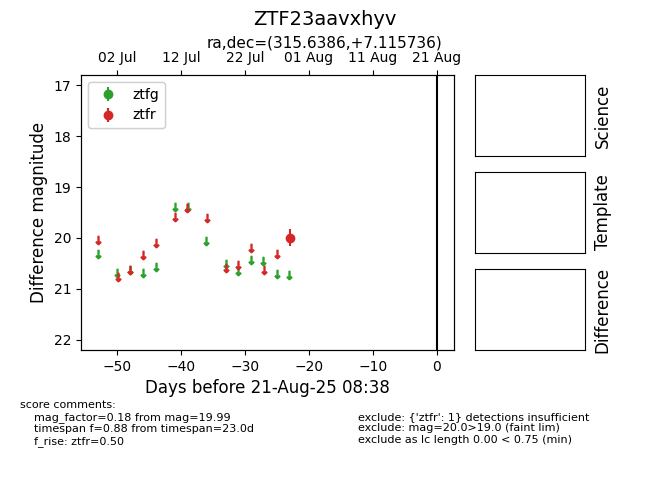

Target ZTF23aavxhyv at 2025-08-21 08:38, see:
FINK: fink-portal.org/ZTF23aavxhyv
Lasair: lasair-ztf.lsst.ac.uk/objects/ZTF23aavxhyv
ALeRCE: alerce.online/object/ZTF23aavxhyv
alt names
ZTF23aavxhyv (ztf,alerce)
coordinates:
equatorial (ra, dec) = (315.6386,+7.11574)
galactic (l, b) = (55.9948,-24.93850)
photometry
last ztfr=19.99
1 ztfr detections
